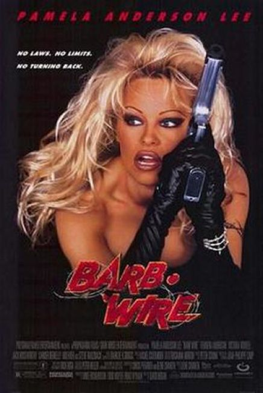
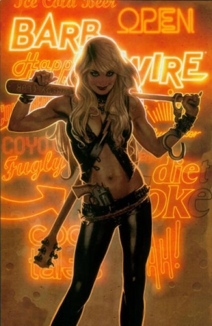
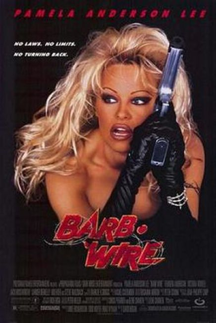
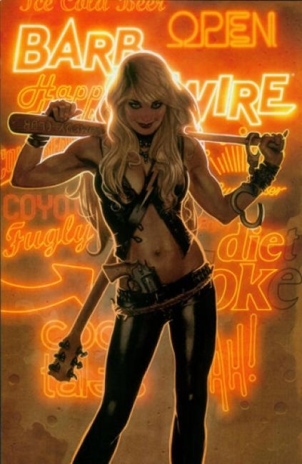

 1994 Issue #1: "Devil in the Dark" with guest appearances by The Machine, Hurricane Max, Motorhead, and Deathcard.
1996 Movie by Gramercy Pictures, starring Pamela Anderson. Barb Wire is set in 2017 during the "Second American Civil War". Barb Wire owns the Hammerhead, a nightclub in Steel Harbor, "the last free city" in a United States ravaged by the civil war, and she brings in extra cash working as a mercenary and bounty hunter.
2015 Issue #1: Nail-hard tough and drop-dead gorgeous, Barb Wire is the baddest bounty hunter on the mean streets of Steel Harbor, where gangsters can lift bulldozers and leap rusting factories in a single bound. The hunting is stupid good and the bounties are hella big, if Barb lives long enough to collect!